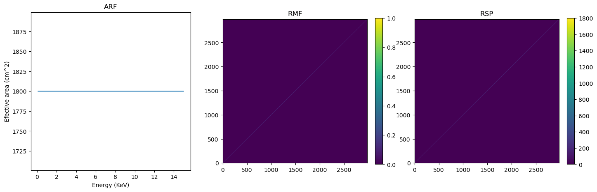
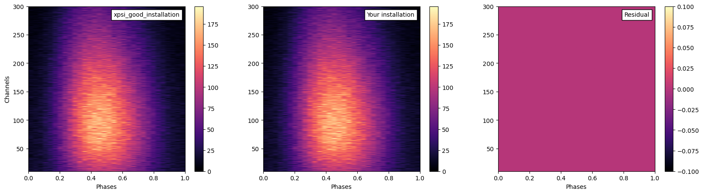
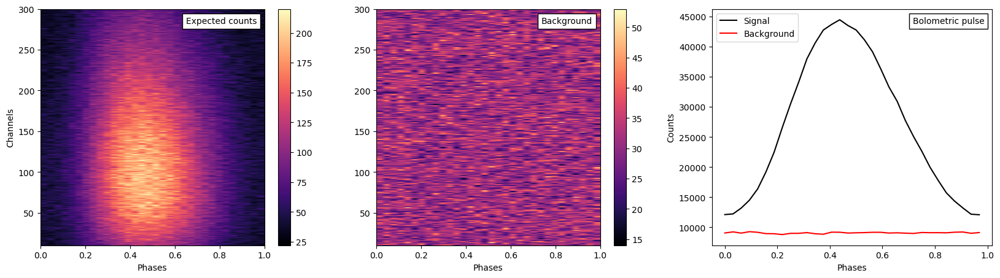

Synthetic data
This notebook is to help synthetise data using a very simple model (ST- : single temperature) For more complex model, see: https://xpsi-group.github.io/xpsi/Modeling.html For synthetic data with different instruments, see: https://xpsi-group.github.io/xpsi/Instrument_synergy.html
[1]:
%matplotlib inline
import os
import numpy as np
import math
from matplotlib import pyplot as plt
from matplotlib import pyplot as plt
from matplotlib.offsetbox import AnchoredText
from matplotlib import cm
import xpsi
from xpsi import Parameter
from xpsi.global_imports import _c, _G, _dpr, gravradius, _csq, _km, _2pi
/=============================================\
| X-PSI: X-ray Pulse Simulation and Inference |
|---------------------------------------------|
| Version: 3.2.1 |
|---------------------------------------------|
| https://xpsi-group.github.io/xpsi |
\=============================================/
Imported emcee version: 3.1.6
Imported PyMultiNest.
Check your UltraNest installation.
Check your installation of UltraNest if using the UltranestSampler
Warning: Cannot import torch and test SBI_wrapper.
Imported GetDist version: 1.7.5
Imported nestcheck version: 0.2.1
Instrument (fake)
We create a fake telescope response.
This fake instrument has:
Energy range of 0.1-15 keV
A perfect normalized RMF
An effective area of 1800 cm2 for each photon energy bin
Channel edges
[2]:
channel_number=np.arange(0,1501) # The channel nnumber
energy_low=np.arange(0,15.01, 0.01) # Lower bounds of each channel
energy_high=energy_low+0.01 # Upper bounds of each channel
channel_edges=np.array([list(channel_number),list(energy_low),list(energy_high)]).T
# ARF
arf_energy_low=[0.1]
arf_energy_high=[0.105]
arf_val=[1800]
counter=1
while arf_energy_low[-1]<=14.995:
arf_energy_low.append(arf_energy_low[-1]+0.005)
arf_energy_high.append(arf_energy_high[-1]+0.005)
arf_val.append(1800)
counter +=1
ARF=np.array([list(arf_energy_low),
list(arf_energy_high),
list(arf_val)]).T
# RMF
RMF=np.diag(np.full(counter,1))
[3]:
# Quick plot to show what we have created
fig,ax=plt.subplots(1,3,figsize=(17,5))
ax[0].plot(ARF[:,0],ARF[:,2])
rmf=ax[1].imshow(RMF,origin="lower")#,aspect="auto")
rsp=ax[2].imshow(RMF*ARF[:,2],origin="lower")#,extent = [0, 1500, 0, ],aspect=1)
plt.colorbar(rmf,ax=ax[1], fraction=0.046, pad=0.05)
plt.colorbar(rsp,ax=ax[2],fraction=0.046, pad=0.05, shrink=1)
ax[0].set_title('ARF')
ax[1].set_title('RMF')
ax[2].set_title('RSP')
ax[0].set_xlabel("Energy (KeV)")
ax[0].set_ylabel("Efective area (cm^2)")
[3]:
Text(0, 0.5, 'Efective area (cm^2)')

[4]:
# Instrument Class
class CustomInstrument(xpsi.Instrument):
""" Fake telescope response. """
def __call__(self, signal, *args):
""" Overwrite base just to show it is possible.
We loaded only a submatrix of the total instrument response
matrix into memory, so here we can simplify the method in the
base class.
"""
matrix = self.construct_matrix()
self._folded_signal = np.dot(matrix, signal)
return self._folded_signal
@classmethod
def from_response_files(cls, ARF, RMF, max_input, min_input=0,channel=[1,1500],
channel_edges=None):
""" Constructor which converts response files into :class:`numpy.ndarray`s.
:param str ARF: Path to ARF which is compatible with
:func:`numpy.loadtxt`.
:param str RMF: Path to RMF which is compatible with
:func:`numpy.loadtxt`.
:param str channel_edges: Optional path to edges which is compatible with
:func:`numpy.loadtxt`.
"""
if min_input != 0:
min_input = int(min_input)
max_input = int(max_input)
matrix = np.ascontiguousarray(RMF[min_input:max_input,channel[0]:channel[1]].T, dtype=np.double)
edges = np.zeros(ARF[min_input:max_input,2].shape[0]+1, dtype=np.double)
edges[0] = ARF[min_input,0]; edges[1:] = ARF[min_input:max_input,1]
for i in range(matrix.shape[0]):
matrix[i,:] *= ARF[min_input:max_input,2]
channels = np.arange(channel[0],channel[1])
return cls(matrix, edges, channels, channel_edges[channel[0]:channel[1]+1,1])
[5]:
# Because this RSP is ideal and perfectly diagonal: then max_input, min_input =channel[1], channel[0]
Instrument = CustomInstrument.from_response_files(ARF =ARF,
RMF = RMF,
max_input = 301,
min_input = 10,
channel=[10,301],
channel_edges =channel_edges)
Setting channels for loaded instrument response (sub)matrix...
Channels set.
An empty subspace was created. This is normal behavior - no parameters were supplied.
Signal
[6]:
# Nothing very special here
from xpsi.tools.synthesise import synthesise_exposure as _synthesise_expo
class CustomSignal(xpsi.Signal):
""" A custom calculation of the logarithm of the NICER likelihood.
Here we actually restrict computation to the expected counts only
as the likelihood is not needed.
We extend the :class:`xpsi.Signal.Signal` class to make it callable.
We overwrite the body of the __call__ method. The docstring for the
abstract method is copied.
"""
def __init__(self, support = None, *args, **kwargs):
super(CustomSignal, self).__init__(*args, **kwargs)
@property
def support(self):
return self._support
@support.setter
def support(self, obj):
self._support = obj
def __call__(self, *args, **kwargs):
self._expected_counts, _, _ = _synthesise_expo(self.exposure_time,
self._data.phases,
self._signals,
self._phases,
self._shifts,
0.0,
np.zeros((len(self._data.channels),len(self._data.phases)-1))
)
Space-time
[7]:
bounds = dict(distance = (0.1, 10.0), # (Earth) distance
mass = (1.0, 3.0), # mass
radius = (3.0 * gravradius(1.0), 16.0), # equatorial radius
cos_inclination = (0.0, 1.0)) # (Earth) inclination to rotation axis
spacetime = xpsi.Spacetime(bounds=bounds, values=dict(frequency=314.0))# Fixing the spin
Creating parameter:
> Named "frequency" with fixed value 3.140e+02.
> Spin frequency [Hz].
Creating parameter:
> Named "mass" with bounds [1.000e+00, 3.000e+00].
> Gravitational mass [solar masses].
Creating parameter:
> Named "radius" with bounds [4.430e+00, 1.600e+01].
> Coordinate equatorial radius [km].
Creating parameter:
> Named "distance" with bounds [1.000e-01, 1.000e+01].
> Earth distance [kpc].
Creating parameter:
> Named "cos_inclination" with bounds [0.000e+00, 1.000e+00].
> Cosine of Earth inclination to rotation axis.
Hot spot
We will use a single hot spot. For complex models, see: https://xpsi-group.github.io/xpsi
[8]:
# Using default hard-coded bounds
bounds = dict(super_colatitude = (None, None),
super_radius = (None, None),
phase_shift = (-0.25, 0.75),
super_temperature = (None, None))
# a simple circular, simply-connected spot
hot_spot = xpsi.HotRegion(bounds=bounds,
values={}, # no initial values and no derived/fixed
symmetry=True,
omit=False,
cede=False,
concentric=False,
sqrt_num_cells=32,
min_sqrt_num_cells=10,
max_sqrt_num_cells=64,
num_leaves=100,
num_rays=200,
is_antiphased=True,
image_order_limit=3, # up to tertiary
prefix='hot') # unique prefix needed because >1 instance
Creating parameter:
> Named "super_colatitude" with bounds [0.000e+00, 3.142e+00].
> The colatitude of the centre of the superseding region [radians].
Creating parameter:
> Named "super_radius" with bounds [0.000e+00, 1.571e+00].
> The angular radius of the (circular) superseding region [radians].
Creating parameter:
> Named "phase_shift" with bounds [-2.500e-01, 7.500e-01].
> The phase of the hot region, a periodic parameter [cycles].
Creating parameter:
> Named "super_temperature" with bounds [3.000e+00, 7.600e+00].
> log10(superseding region effective temperature [K]).
Phostosphere
We will use here the default black-body emission model. No emission from the rest of the star, all the emission is from the hot spot
[9]:
class CustomPhotosphere(xpsi.Photosphere):
""" Implement method for imaging."""
@property
def global_variables(self):
return np.array([self['hot__super_colatitude'],
self['hot__phase_shift'] * _2pi,
self['hot__super_radius'],
self['hot__super_temperature']])
photosphere = CustomPhotosphere(hot = hot_spot, elsewhere = None,
values=dict(mode_frequency = spacetime['frequency']))
Creating parameter:
> Named "mode_frequency" with fixed value 3.140e+02.
> Coordinate frequency of the mode of radiative asymmetry in the
photosphere that is assumed to generate the pulsed signal [Hz].
Star
[10]:
# Star object
star = xpsi.Star(spacetime = spacetime, photospheres = photosphere)
Prior
Simple Prior class, nothing very fancy here
[11]:
class CustomPrior(xpsi.Prior):
""" A custom (joint) prior distribution.
Source: Fictitious
Model variant: ST-
"""
__derived_names__ = ['compactness', 'phase_separation',]
def __init__(self):
""" Nothing to be done.
A direct reference to the spacetime object could be put here
for use in __call__:
.. code-block::
self.spacetime = ref
Instead we get a reference to the spacetime object through the
a reference to a likelihood object which encapsulates a
reference to the spacetime object.
"""
super(CustomPrior, self).__init__() # not strictly required if no hyperparameters
def __call__(self, p = None):
""" Evaluate distribution at ``p``.
:param list p: Model parameter values.
:returns: Logarithm of the distribution evaluated at ``p``.
"""
temp = super(CustomPrior, self).__call__(p)
if not np.isfinite(temp):
return temp
# based on contemporary EOS theory
if not self.parameters['radius'] <= 16.0:
return -np.inf
ref = self.parameters.star.spacetime # shortcut
# Compactness limit
R_p = 1.0 + ref.epsilon * (-0.788 + 1.030 * ref.zeta)
if R_p < 1.505 / ref.R_r_s:
return -np.inf
mu = math.sqrt(-1.0 / (3.0 * ref.epsilon * (-0.788 + 1.030 * ref.zeta)))
# 2-surface cross-section have a single maximum in |z|
# i.e., an elliptical surface; minor effect on support, if any,
# for high spin frequenies
if mu < 1.0:
return -np.inf
ref = self.parameters
return 0.0
def inverse_sample(self, hypercube=None):
""" Draw sample uniformly from the distribution via inverse sampling. """
to_cache = self.parameters.vector
if hypercube is None:
hypercube = np.random.rand(len(self))
# the base method is useful, so to avoid writing that code again:
_ = super(CustomPrior, self).inverse_sample(hypercube)
ref = self.parameters # shortcut
# restore proper cache
for parameter, cache in zip(ref, to_cache):
parameter.cached = cache
# it is important that we return the desired vector because it is
# automatically written to disk by MultiNest and only by MultiNest
return self.parameters.vector
def transform(self, p, **kwargs):
""" A transformation for post-processing. """
p = list(p) # copy
# used ordered names and values
ref = dict(zip(self.parameters.names, p))
# compactness ratio M/R_eq
p += [gravradius(ref['mass']) / ref['radius']]
return p
[12]:
# Prior object
prior = CustomPrior()
An empty subspace was created. This is normal behavior - no parameters were supplied.
Background
[13]:
class CustomBackground(xpsi.Background):
""" The background injected to generate synthetic data. """
def __init__(self, bounds=None, value=None):
# first the parameters that are fundemental to this class
doc = """ Powerlaw spectral index. """
index = xpsi.Parameter('powerlaw_index',
strict_bounds = (-4.0, -1.01),
bounds = bounds,
doc = doc,
symbol = r'$\Gamma$',
value = value)
super(CustomBackground, self).__init__(index)
def __call__(self, energy_edges, phases):
""" Evaluate the incident background field. """
G = self['powerlaw_index']
temp = np.zeros((energy_edges.shape[0] - 1, phases.shape[0]))
temp[:,0] = (energy_edges[1:]**(G + 1.0) - energy_edges[:-1]**(G + 1.0)) / (G + 1.0)
for i in range(phases.shape[0]):
temp[:,i] = temp[:,0]
self._incident_background= temp
[14]:
background = CustomBackground(bounds=(None, None))
Creating parameter:
> Named "powerlaw_index" with bounds [-4.000e+00, -1.010e+00].
> Powerlaw spectral index.
Data
[15]:
class SynthesiseData(xpsi.Data):
""" Custom data container to enable synthesis. """
def __init__(self, channels, phases, first, last):
self.channels = channels
self._phases = phases
try:
self._first = int(first)
self._last = int(last)
except TypeError:
raise TypeError('The first and last channels must be integers.')
if self._first >= self._last:
raise ValueError('The first channel number must be lower than the '
'the last channel number.')
[16]:
301-10-1
[16]:
290
[17]:
201-20-1
[17]:
180
[18]:
_data = SynthesiseData(np.arange(10,301), np.linspace(0.0, 1.0, 33), 0, 290 )
Setting channels for event data...
Channels set.
Synthesise
[19]:
signal = CustomSignal(data = _data,
instrument = Instrument,
background = background,
interstellar = None,
cache = True,
prefix='Instrument')
likelihood = xpsi.Likelihood(star = star, signals = signal,
num_energies=384,
threads=1,
externally_updated=False,
prior = prior)
for h in hot_spot.objects:
h.set_phases(num_leaves = 100)
Creating parameter:
> Named "phase_shift" with fixed value 0.000e+00.
> The phase shift for the signal, a periodic parameter [cycles].
[20]:
likelihood
[20]:
Free parameters
---------------
mass: Gravitational mass [solar masses].
radius: Coordinate equatorial radius [km].
distance: Earth distance [kpc].
cos_inclination: Cosine of Earth inclination to rotation axis.
hot__phase_shift: The phase of the hot region, a periodic parameter [cycles].
hot__super_colatitude: The colatitude of the centre of the superseding region [radians].
hot__super_radius: The angular radius of the (circular) superseding region [radians].
hot__super_temperature: log10(superseding region effective temperature [K]).
Instrument__powerlaw_index: Powerlaw spectral index.
Saving to TXT file
[21]:
print("Processing ...")
p_T=[1.4, # Mass in solar Mass
12, # Equatorial radius in km
1., # Distance in kpc
math.cos(60*np.pi/180), # Cosine of Earth inclination to rotation axis
0.0, # Phase shift
70*np.pi/180, # Colatitude of the centre of the superseding region
0.75, # Angular radius of the (circular) superseding region
6.7, # Temperature in log 10
-2 # Background sprectral index : gamma (E^gamma)
]
Instrument_kwargs = dict(exposure_time=1000.0,
expected_background_counts=10000.0,
name='new_synthetic',
directory='../../examples/examples_fast/Data/',
seed=42) # The reference has been made with seed=42 so let's use that
likelihood.synthesise(p_T, force=True, Instrument=Instrument_kwargs)
print("Done !")
Processing ...
Using background from signal._background.
Done !
Checking
[22]:
# Loading the data that you would get if the installation went well
good_xspi_data=np.loadtxt("../../examples/examples_fast/Data/xpsi_good_realisation.dat")
# Loading the data that you got
your_data=np.loadtxt("../../examples/examples_fast/Data/new_synthetic_realisation.dat")
residual=(good_xspi_data-your_data)
fig,ax=plt.subplots(1,3,figsize=(20,5))
xpsi_d=ax[0].imshow(good_xspi_data,cmap=cm.magma,origin="lower", aspect="auto",extent=[0,1,10,300])
you_d=ax[1].imshow(your_data,cmap=cm.magma,origin="lower", aspect="auto",extent=[0,1,10,300])
res=ax[2].imshow(residual,cmap=cm.magma,origin="lower", aspect="auto",extent=[0,1,10,300])
anchored_text1 = AnchoredText("xpsi_good_installation",loc=1)
anchored_text2 = AnchoredText("Your installation",loc=1)
anchored_text3 = AnchoredText("Residual",loc=1)
ax[0].set_ylabel("Channels")
ax[0].set_xlabel("Phases")
ax[1].set_xlabel("Phases")
ax[2].set_xlabel("Phases")
ax[0].add_artist(anchored_text1)
ax[1].add_artist(anchored_text2)
ax[2].add_artist(anchored_text3)
plt.colorbar(xpsi_d,ax=ax[0])
plt.colorbar(you_d,ax=ax[1])
plt.colorbar(res,ax=ax[2])
[22]:
<matplotlib.colorbar.Colorbar at 0x37d6ceba0>

Saving to FITS file
We can also save the data as fits files.
It is also possible to also define yourself the background, however, you need to not have a background instance linked to your likelihood.
Here is how it goes.
[23]:
# Recreating signal but without background
signal = CustomSignal(data = _data,
instrument = Instrument,
interstellar = None,
cache = True,
prefix='Instrument')
likelihood = xpsi.Likelihood(star = star, signals = signal,
num_energies=384,
threads=1,
externally_updated=False,
prior = prior)
for h in hot_spot.objects:
h.set_phases(num_leaves = 100)
Creating parameter:
> Named "phase_shift" with fixed value 0.000e+00.
> The phase shift for the signal, a periodic parameter [cycles].
[24]:
print("Processing ...")
p_T=[1.4, # Mass in solar Mass
12, # Equatorial radius in km
1., # Distance in kpc
math.cos(60*np.pi/180), # Cosine of Earth inclination to rotation axis
0.0, # Phase shift
70*np.pi/180, # Colatitude of the centre of the superseding region
0.75, # Angular radius of the (circular) superseding region
6.7, # Temperature in log 10
]
background_data = 1e3*np.ones(291)
Instrument_kwargs = dict(exposure_time=1000.0, # Exposure time in seconds
data_BKG=background_data, # Background data to apply, can be 1D if phase-averaged
# Needs to be 2D otherwise
format='FITS', # Format of the data : 'FITS' or 'TXT'
instrument_name='FAKE INSTRUMENT', # Name of the instrument, must match the response files
backscal_ratio=1.0, # Backscale ratio (bkg/src), 1 if the data is from the same region as the source
# Otherwise set it to the ratio to use for latter inference on synthetic data
name='new_synthetic', # File name
directory='../../examples/examples_fast/Data', # Directory
seed=42, # Seed for RNG
save_background=True, # Save the background files as well ?
)
likelihood.synthesise(p_T, force=True, Instrument=Instrument_kwargs)
print("Done !")
Processing ...
Using data_BKG.
Done !
[25]:
# Loading the data that you just generated
expected_counts_realization = xpsi.Data.from_evt("../../examples/examples_fast/Data/new_synthetic_realisation.evt")
background_realization = xpsi.Data.from_evt("../../examples/examples_fast/Data/new_synthetic_bkg_realisation.evt")
fig,ax=plt.subplots(1,3,figsize=(20,5))
expec_d = ax[0].imshow(expected_counts_realization.counts,cmap=cm.magma,origin="lower", aspect="auto",extent=[0,1,10,300])
bkg_d = ax[1].imshow(background_realization.counts,cmap=cm.magma,origin="lower", aspect="auto",extent=[0,1,10,300])
ax[2].plot(expected_counts_realization.phases[:-1], expected_counts_realization.counts.sum(axis=0),label="Signal", color='k')
ax[2].plot(background_realization.phases[:-1], background_realization.counts.sum(axis=0),label="Background", color='r')
anchored_text1 = AnchoredText("Expected counts",loc=1)
anchored_text2 = AnchoredText("Background",loc=1)
anchored_text3 = AnchoredText("Bolometric pulse",loc=1)
ax[0].set_ylabel("Channels")
ax[0].set_xlabel("Phases")
ax[1].set_xlabel("Phases")
ax[2].set_xlabel("Phases")
ax[2].set_ylabel("Counts")
ax[2].legend(loc='upper left')
ax[0].add_artist(anchored_text1)
ax[1].add_artist(anchored_text2)
ax[2].add_artist(anchored_text3)
plt.colorbar(expec_d,ax=ax[0])
plt.colorbar(bkg_d,ax=ax[1])
Loading event list and phase binning...
Setting channels for event data...
Channels set.
Events loaded and binned.
Loading event list and phase binning...
Setting channels for event data...
Channels set.
Events loaded and binned.
[25]:
<matplotlib.colorbar.Colorbar at 0x37d78fdd0>
